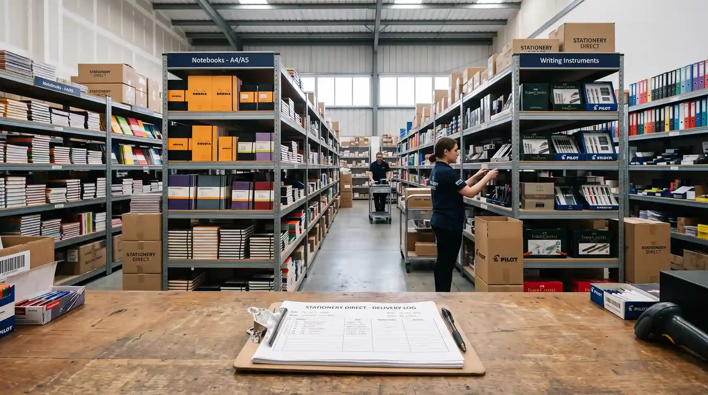
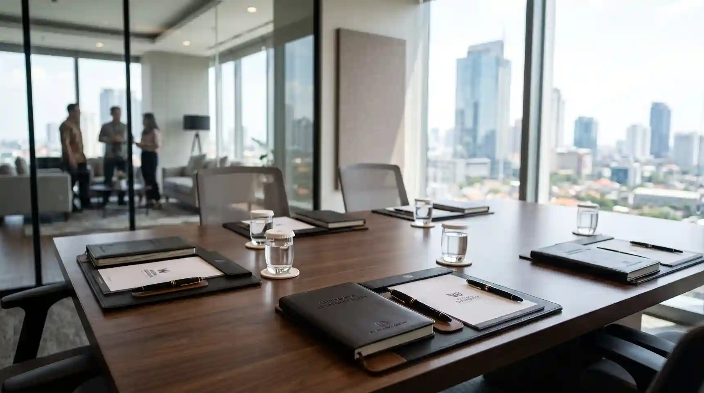
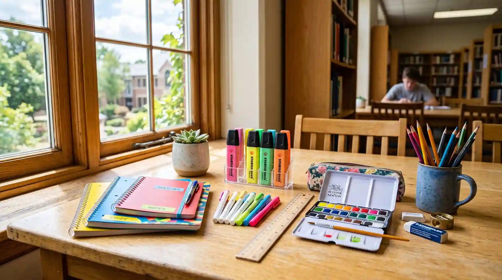
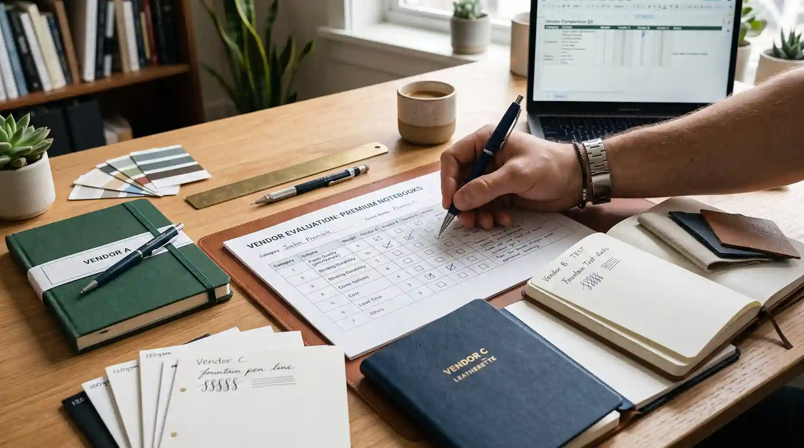

Tips, panduan, dan informasi seputar pengadaan alat tulis kantor untuk instansi pemerintah, pendidikan, dan perusahaan.

Panduan memilih distributor ATK di Malang untuk kebutuhan pengadaan kantor, sekolah, dan instansi pemerintah.
Baca Selengkapnya
Kenali kriteria supplier ATK yang tepat bagi perusahaan di Surabaya untuk mendukung operasional kantor.
Baca Selengkapnya
Tips menyusun kebutuhan ATK untuk sekolah dan kampus agar proses pengadaan lebih efisien dan tepat anggaran.
Baca Selengkapnya
Panduan praktis memilih vendor alat tulis kantor yang terpercaya untuk kebutuhan pengadaan instansi Anda.
Baca SelengkapnyaPanduan lengkap pengadaan alat tulis kantor untuk instansi pemerintah sesuai dengan regulasi yang berlaku.
Baca SelengkapnyaTim kami siap membantu menjawab kebutuhan Anda secara langsung.
Hubungi WhatsApp